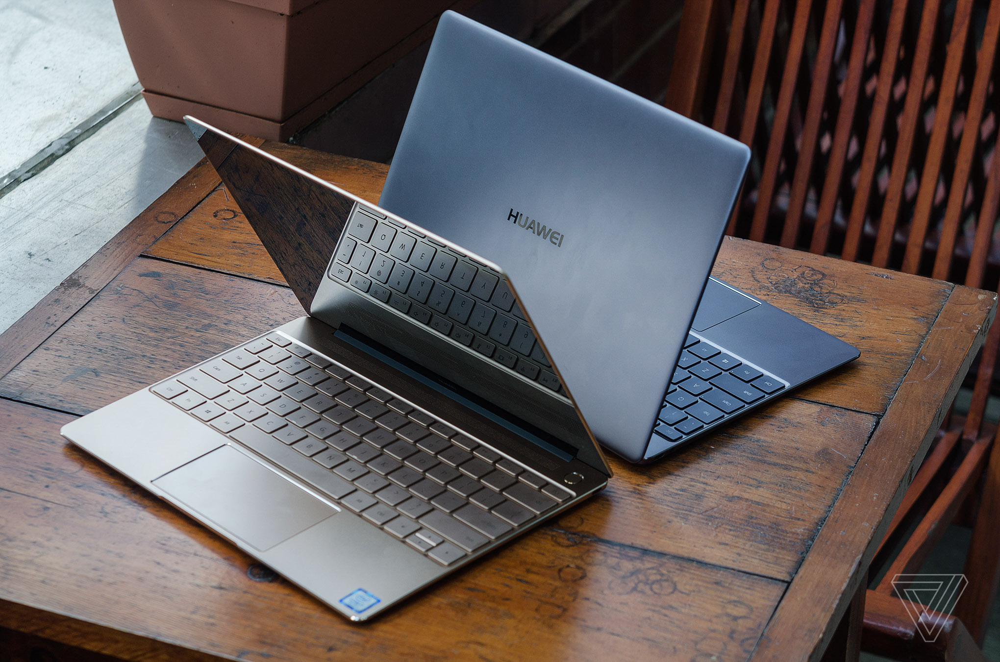

Huawei MateBook X Pro
Note
9/10
Où acheter le Huawei MateBook X au meilleur prix ?
INTRODUCTION
Nous avons pu tester le Huawei Matebook X Pro, l’ordinateur qui nous avait forte impression lors de notre prise en main. La machine a connu une présentation marquante grâce à son astucieuse caméra logée dans le clavier, mais ce n’est pas le seul argument que peut faire valoir cet ordinateur portable sous Windows 10.
DESIGN
Pour créer son MateBook X Pro, Huawei s’est clairement inspiré de ce qui se faisait de mieux sur le marché, et a donc probablement étudié le design des Dell XPS, Apple MacBook et autre HP Spectre X360. On retrouve ainsi un châssis en aluminium avec des finitions de très bonne qualité, et un écran tactile bord à bord entouré d’un cadre noir en verre.
Petit détail à noter sur le design général, l’appareil intègre une encoche. Non, ne vous inquiétez pas ! On ne parle pas ici de l’écran, mais plutôt d’une encoche sous le touchpad, qui permet d’ouvrir très facilement le PC..
pripherique
Le MateBook X Pro est un ultraportable, et à ce titre il intègre un clavier rétroéclairé AZERTY, mais pas de pavé numérique. La frappe est très agréable, d’une part les touches sont larges (le clavier utilise presque toute la largeur de la machine), mais la course est suffisamment longue pour proposer un bon retour physique. Rien à redire non plus sur le bouton d’allumage qui fait également lecteur d’empreinte. Huawei peut ici réutiliser le savoir-faire que l’on connaît avec ses smartphones.
Le touchpad est une vraie réussie. Rares sont les appareils sous Windows à intégrer un pavé aussi large et aussi agréable à utiliser, surtout pour un PC aussi compact. La glisse est agréable et les deux boutons répondent bien. Il s’agit bien sûr d’un pavé tactile de précision, ce qui signifie qu’il s’intègre très bien à Windows 10 et aux raccourcis tactiles du système (glisser avec deux doigts pour faire défiler par exemple).
La connectique
Difficile d’être mécontent sur la question de la connectique, Huawei propose à la fois de l’ancien et du nouveau. On retrouve deux ports USB Type-C, dont un port Thunderbolt 3 (jusqu’à 20 Gbit/s) sur la tranche gauche, et un port USB Type-A (USB 3.0), le connecteur classique, sur la tranche droite. À cela s’ajoute un port jack 3,5 mm.
On regrette simplement qu’il n’y ait aucun lecteur de carte pour étendre facilement le stockage interne, ou vider rapidement la carte d’un appareil photo. Il aurait également était plus intéressant de répartir les ports USB Type-C sur chaque côté de la machine, pour pouvoir brancher son appareil dans toutes les situations.
ECRAN
Le MateBook X Pro intègre un écran de 13,9 pouces LTPS (dalle JDI LPM139M422A) avec un format d’affichage 3:2 encore rare sur ce marché. On le connaît notamment sur les produits Surface et le PixelBook de Google. Comparé au 16:9 plus classique, il propose plus de hauteur et convient donc mieux à un travail bureautique et une navigation sur le web, mais moins à la consommation de vidéos en format large. C’est aussi grâce à ce format d’écran que Huawei peut se permettre, sur la partie basse de l’ordinateur, d’intégrer un touchpad aussi grand, tout en gardant un clavier confortable. Difficile de revenir à un écran 16:9 après avoir testé le Matebook X Pro.
À l’œil nu, impossible de prendre en défaut cet écran qui semble à la fois très lumineux et bien contrasté. Notre test avec une sonde colorimétrique confirme cette impression. L’écran affiche une luminosité maximale de 520 cd/m² avec un contraste de 1600:1, ce sont des résultats tout simplement excellents pour un écran LCD installé sur un PC..
Par défaut, l’écran affiche des couleurs proches de la réalité, avec une température moyenne à 6800K. Le spectre sRGB est complètement couvert, comme le montre le diagramme CIE.
Systéme
On ne présente plus Windows 10, la dernière version du système d’exploitation de Microsoft sorti en 2015 et mis à jour deux fois par an par l’éditeur. Ici, Huawei propose l’édition familiale du système et non une version pro, comme c’est le cas habituellement sur cette gamme de prix. Les différences pour les particuliers sont minimes, surtout depuis que l’édition familiale intègre le chiffrement du stockage.
Il permet à la fois de gérer l’ordinateur, notamment les mises à jour de pilote et le bon fonctionnement des composants, mais aussi de contacter le service après-vente de Huawei et se connecter à un smartphone de la marque. Cela permet par exemple de faire du partage de fichier rapidement en Wi-Fi ou de partager la connexion 4G LTE de son smartphone avec l’ordinateur.
Fiche technique
| Modèle | Huawei MateBook X Pro |
|---|---|
| Processeur | Intel Core i (7-5-3) 8éme genération |
| Fréquence du processeur | 1.80 GHz |
| Type de mémoire vive | DDR3L-SDRAM |
| Capacité de stockage principal | 256 à 1 TB Go |
| Type de stockage principal | SSD |
| Interface stockage principal | M.2, PCI-Express |
| Seconde baie disque | Non |
| Lecteur optique | Non |
| Résolution WebCam | 1 Mpx |
| Taille d'écran | 13.9 " |
| Format de l'écran | 3:2 |
| Tactile | Oui |
| Définition de l'écran | 3000 x 2000 pixels |
| Aspect de l'écran | Brillant |
| Processeur graphique | Nvidia GeForce MX150 |
| Quantité de mémoire graphique | 2048 Mo |
| SD / MMC | Non |
| MicroSD | Non |
| Nombre de ports USB 3.0 | 2 |
| Ports Thunderbolt | 1 |
| Ports eSATA | Non |
| Support du NFC | Non |
| Système audio embarqué | 4.0 |
| Support du Wi-Fi | Wi-Fi 802.11ac |
| Support du Bluetooth | Bluetooth 4.1 |
| Ethernet 10/100 | Non |
| Support du Bluetooth | Bluetooth 4.2 |
| Capacité de mémoire vive | 8-16 Go |
| Système d'exploitation | Windows 10 64-bits |
| Poids (batterie incluse) | 1.312 kg |